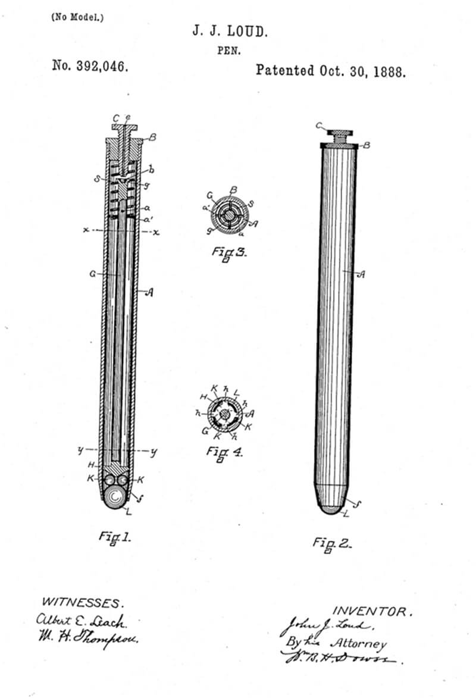

Como surgiu?Esferográfica surgiu em 1930 como a conhecemos atualmente pelo jornalista Lászlõ Biró. Está ideia surgiu quando ele se apercebeu que tipo de tinta de impressão seca muito mais rapido do que aquelas que eram utilizavam na altura. A primeira patente da esferográfica apareceu no dia 30 de Outubro de 1888 pelo John J. Loud Esboço da esferografica Em 1931 Lászlõ Biró e o seu irmão pediram a patente sua invenção, na Feira Internacional de Budapeste. A famosa marca de "BIC" apareceu em 1949, uma abreviatura do nome original canetas Birome. O que é?Espécie de caneta com uma pequena esfera móvel na extremidade para regular o fluxo da tinta. Definição retirada da pagina infopédia. TipoA regulação ISO 12757 classificação de uma caneta:
Tamanho da esfera: 1,6 mm Largura do traço: 0,56 mm Tamanho da esfera: Entre 1 e 1,2 mm Largura do traço: 0,32 mm Tamanho da esfera: 0,8 mm Largura do traço: 0,30 mm Tamanho da esfera: 0,7 mm Largura do traço: 0,27 mm  |